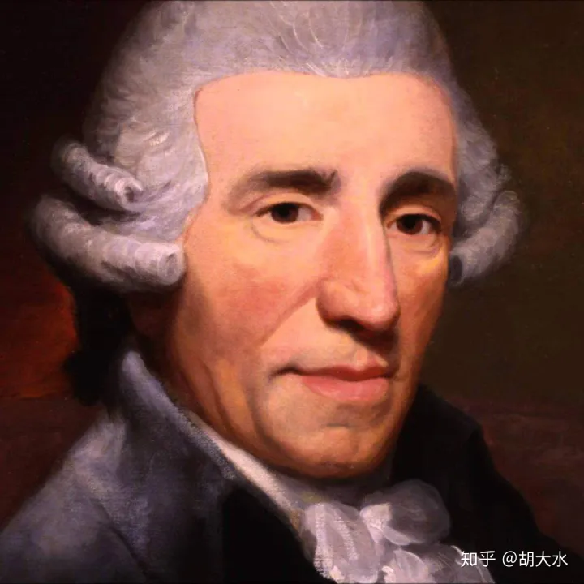

海顿

弗朗茨·约瑟夫·海顿（Franz Joseph Haydn，1732—1809）是奥地利作曲家。
海顿的创作重心集中在交响曲、弦乐四重奏、羽管键琴奏鸣曲等体裁，在海顿之前已经有很多的作曲家开始进行这些体裁的创作，而海顿的创作将这些体裁推进到一个更高的水准，并逐渐确立了古典主义时期的风格范式。
海顿的一生可以分为四个时期：
一、第一时期（1732—1761年）
1732年，海顿出生在奥地利和匈牙利的边境罗劳的一个农民家里。海顿8岁时，被维也纳圣斯蒂芬教堂的乐长挑去学习音乐，并加入教堂的合唱团。1749年，青春期的海顿声音开始变得沙哑，由此不能够继续呆在合青少年合唱团，海顿开始以一个自由音乐人的身份在社会上活动，他主要以在教堂、宫廷演奏管风琴、羽管键琴或在乐队里演奏乐器等方式赚钱。期间海顿与意大利作曲家波尔波拉相识，学习唱歌、作曲。从1749—1757这八年，海顿基本处于一个积累和学习的阶段，创作的作品不多。从1757—1761年，海顿为莫尔津（Morzin）家族服务，他由一个自由作曲家变为了为贵族服务的作曲家，他的音乐开始变得具有宫廷风格。
1759年，27岁的海顿结识了匈牙利贵族保罗·埃斯特哈齐亲王，并于1761年受聘为埃斯特哈齐亲王宫廷乐队的副乐长，对于海顿的整个人生以及音乐创作生涯来讲，这是他一生最重要的转折点。海顿在1732—1761年这一时期，个人风格还没有形成，更多的是对古典主义早期的一些作曲家音乐作品的模仿与学习，比较能体现他这一时期风格的是他的第一部交响曲《D大调第一交响曲》。
二、第二时期（1761—1790年）
埃斯特哈齐家族是匈牙利最富有、最有影响力的家族，长期以来一直是文化和艺术的重要赞助人。海顿刚来埃斯特哈齐家族时，家族中已有一位乐师大哥，海顿主要是给他当助手。海顿这一时期的的所有作品的版权是属于埃斯特哈齐家族的，这对于一个作曲家来说是有点委屈的，但在待遇面前，海顿忍了。海顿在埃斯特哈齐家族的第一个老板“保罗·埃斯特哈齐”在1761年3月逝世，他的兄弟“尼古拉斯·埃斯特哈齐”继位，尼古拉斯是海顿的第二个老板，他十分看重海顿，给海顿在创作上提供了很大的支持。
在1760年代的前几年，海顿创作了主要是器乐，而在器乐体裁中，他最具有代表性的体裁就是交响乐，其中比较有代表性的有：《“哲学家”交响曲》（No.22，1764）、《“哈利路亚”交响曲》（No.30，1765）和《“号角”交响曲》（No.31，1765）。等等。这一阶段海顿的创作基本还是处于探索时期，虽然有一些想法，但并不是十分成熟。
在1766年，海顿一直辅助的乐师大哥去世了，海顿成为了“新的大哥”，开始负责埃斯特哈齐家族的一些重要音乐工作。他这一时期为了使会演奏巴利东（baryton）琴的“第二老板”尼古拉斯能参与演奏，专门创作了创作了巴利东独奏或重奏曲。
在1760年代末和1770年代初，随着海顿在音乐创作上有了更多话语权，他的音乐尝试更加大胆了。可以看出，海顿的作品要比之前更加宏伟、篇幅更大的同时在技法上也更加大胆了。海顿在这一时期进行了广泛而自由的探索与尝试，创作出了他一生绝大部分作品，其中比较有代表性的交响曲有：《“哀伤”交响曲》（No.26，1768）、《“悼念”交响曲》（No.44，1771）、《“告别”交响曲》（No.45，1772）。等等。
这一时期的弦乐四重奏，相比于以前，也更加成熟了，比较有代表性的有：Op.17（No.1—6，1771）、“太阳四重奏”Op.20（No.1—6，1772）等。
从1776年代起“二老板”尼古拉斯尤其钟爱舞台剧和歌剧，埃斯特哈兹宫廷的歌剧和戏剧活动大量增加，导致器乐演奏也同样急剧减少，这就使得海顿这一时期的创作开始关注声乐，他创作了一些合唱、康塔塔、歌剧。但这些作品并不是十分出色，仅仅是为了满足老板的艺术需求。在1779年开始，埃斯特哈齐家族开始减少了对海顿音乐版权的限制，这使得海顿的创作得到了充分的发展空间，也让更多的人看到了他的作品。80年代开始，海顿的作品不断的被出版，欧洲有越来越多的人开始欣赏海顿的作品。海顿在1780年代的音乐创作真正流行起来，他的创作几乎已经来不及满足当时的委约需求。
在80年代，海顿与年轻的莫扎特相识，海顿在这以后的交响曲及四重奏作品，受到莫扎特的启发和影响，发展到了一个新的高度。这一时期的代表作品有：6首《“巴黎”交响曲》（No.82—87，1785—1786）、《“牛津”交响曲》（No.92，1789）、6首弦乐四重奏（Op.33，1781）、“云雀”四重奏（Op.64，No.1—6）等等，这些作品充分的体现出海顿维也纳古典乐派的大师风范。
1790年，“二老板”尼古拉斯去世，他的儿子，“三老板”安东立即解散了音乐剧和戏剧机构，海顿由此也离开了其服务了三十年的埃斯特哈齐家族，搬到了维也纳。
三、第三个时期（1791—1795年）
海顿刚到维也纳，便接到了访问伦敦的邀请，海顿到了伦敦后，他立即开始生活社交和音乐创作。在1791年，他在牛津获得荣誉音乐博士学位的机会。海顿在1793年回到维也纳停留了一年后，在1794年又返回了伦敦，直至1795年才回来。埃斯特哈齐家族的“三老板”安东于1794年去世，海顿在此时是可以解除对埃斯特哈齐家族的服务的，但海顿还是接受了埃斯特哈齐家族继任者，“四老板”尼古拉斯二世的邀请与任命，继续担任家族的音乐相关工作，我们从中可以看出，海顿还是很“仗义”的。
这一时期，海顿作品的乐队编制要比在之前更大，乐队人数由最早在埃斯特哈齐家族的20多人，到1795年约有60人。在1796年，海顿交代好了伦敦的相关事宜回到了维也纳。这一时期，海顿创作了其“大成之作”——12首《“伦敦”交响乐》。《“伦敦”交响乐》是海顿多年交响曲创作经验的总结，同时也确立了交响乐这种体裁的创作范式，对浪漫主义时期的交响曲创作产生了深远的而影响。
四、第四个时期（1796—1809年）
在1795年，海顿从伦敦归来，很多官方的文化和政治机构都积极的与他合作，这让海顿的音乐创作生涯走到了更高的层次。这一时期，海顿逐渐开始减少了器乐音乐的创作，除了创作了一些协奏曲和一些钢琴作品其他的器乐作品只有一些弦乐四重奏了，其中代表性的作品有：Op.76（No.1—6，1797）等。
他这一时期尤其开始关注神圣声乐作品的创作，海顿在这一时期创作了两部清唱剧《创世纪》和《四季》。
海顿在1796—1797年创作了独唱曲《上帝保佑弗朗兹皇帝》，后来成为了奥地利的国歌。
[DEROVOLK] 奥匈帝国国歌 - 上帝保佑吾皇弗朗茨 (Gott erhalte Franz den Kaiser)
海顿生前的最后一件大事，是在1808年3月27日，在维也纳演出《创世纪》。1809年5月末，海顿逝世，一位古典主义大师结束了其伟大的一生。
海顿的一生创作了大量的音乐作品，其数量和所涉及的领域都是十分惊人的，其创作了108首交响曲，为各种乐器创作了协奏曲、奏鸣曲、四重奏、三重奏，大量的歌剧、弥撒曲、宗教仪式曲、康塔塔、清唱剧和独唱声乐歌曲，还有民歌改编曲等。一方面体现了海顿的惊人创作能力，更是为后来的作曲家提供了很多作曲上的参考。
海顿的创作过程逐渐将交响乐这种体裁的典型范式确定下来：第一乐章：快板，奏鸣曲式；第二乐章：行板、慢板或广板，奏鸣曲式或变奏曲式；第三乐章：用带三声中部的小步舞曲（menuett）；第四乐章：快变或比第一乐章更快的急板，回旋曲式、奏鸣曲式或回旋奏鸣曲式。交响乐这种体裁在18世纪以来的创作经验，在海顿的创作里终于水到渠成。海顿弦乐四重奏的创作基本与交响曲同步发展，技术与结构趋于完美
在音乐史上，海顿最突出的贡献体现在其对交响乐和弦乐四重奏创作模式的确立，这为西方音乐的后辈音乐家的创作起到了很大的影响。他的音乐风格与奥地利维也纳丰富的城市和民间音乐有着十分紧密的联系，清新明快的旋律、简明朴实的和声织体、合理匀称的曲式结构以及别出心裁的设计和处理，等等。都使得海顿的音乐在18世纪古典主义时期独树一帜，通过海顿的音乐使更多人在启蒙时期看到了幸福和希望。
原文来自知乎用户：胡大水